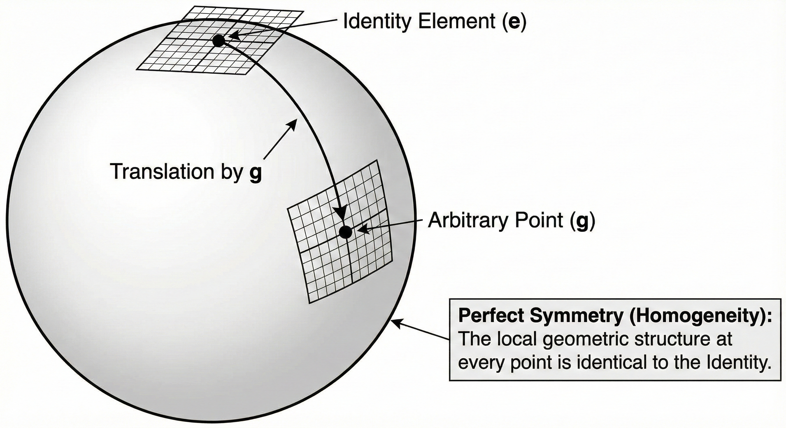

(b) Manifold
1. Operator-valued function
연산자 값 함수 (Operator-valued function) $\hat{S}(\tau)$를 단순한 수식으로 보아서는 안 된다. 이는 추상적인 선형 연산자들의 집합(공간)위를 움직이는 연산자 값 함수이다. 이 함수는 스칼라 파라미터 $\tau$를 입력으로 받아, 그에 해당하는 구체적인 선형 연산자 를 출력으로 내놓는다.
- $\hat{S}(\tau)$ 는 연산자가 아니라, 연산자를 찍어내는 연산자 값 함수 (Operator-valued function) 이다.
- $\hat{S}(1)$, $\hat{S}(3.5)$ 처럼 값이 확정된 것이 연산자다. 리 군(Lie Group)을 구성하는 원소(Element)는, $\tau$에 특정 숫자를 넣어서 계산이 끝난 결과물 하나하나다.
2. 다양체(Manifold): “점들이 모여 만든 도형”
이제 확정된 연산자들(점)을 모두 모아보자.
- $\tau=0$ 일 때의 연산자 $\hat{S}(0)$ (점)
- $\tau=0.1$ 일 때의 연산자 $\hat{S}(0.1)$ (점)
- $\tau=100$ 일 때의 연산자 $\hat{S}(100)$ (점)
이 무수히 많은 점들을 다 찍어서 이으면 하나의 매끄러운 도형이 된다. 이 도형을 다양체(Manifold) 라고 부르며, 바로 리 군(Lie Group) 의 실체다. 그렇다면, 연산자의 점이 무엇 이란 말인가. 기저를 축으로 보고, 그 축으로 이루어진 공간안의 점 이다.
(1) 이산 기저(행렬)
$2 \times 2$ 행렬 하나를 생각해 보자. 숫자가 4개 들어간다.
$$ \hat{A} =\begin{bmatrix} a & b \\ c & d \end{bmatrix} $$이 행렬은 벡터 $[x, y]^T$를 변환시키는 연산자이다. 이 $\hat{A}$ 순서쌍으로 다시 써보면,
$$ \hat{A} \longleftrightarrow (a, b, c, d) $$이렇게 쓰는 순간, 이 연산자는 4차원 공간($\mathbb{R}^4$)에 찍힌 하나의 ‘점’ 이 된다. (물론 기저를 다르게 잡으면, 다른 공간에 찍힌 점이 된다.)
(2) 연속 기저(미분연산자 등)
$d/dx$를 생각해 보자. $d/dx$가 점이 되려면 좌표(숫자 성분)가 있어야 한다. 함수 공간의 기저(Basis)를 정하면 이 좌표가 보인다.가장 쉬운 예로 다항식 기저 ${1, x, x^2, x^3, \dots}$를 순서대로 벡터의 축이라고 가정해 본다.
- $d/dx$를 $1$ 에 걸면: $0$
- $d/dx$를 $x$ 에 걸면: $1$
- $d/dx$를 $x^2$ 에 걸면: $2x$
- $d/dx$를 $x^3$ 에 걸면: $3x^2$
이 규칙을 행렬(좌표)로 옮기면, $d/dx$는 다음과 같은 무한 행렬이라는 ‘점’이 된다.
$$ \frac{d}{dx} \sim \begin{bmatrix} 0 & 1 & 0 & 0 & \cdots \\ 0 & 0 & 2 & 0 & \cdots \\ 0 & 0 & 0 & 3 & \cdots \\ \vdots & \vdots & \vdots & \vdots & \ddots \end{bmatrix} $$이전의 $2 \times 2$ 행렬이 4개의 숫자로 이루어진 점 $(a,b,c,d)$ 라면, $d/dx$는 $(0, 1, 0, \dots, 0, 0, 2, \dots)$라는 좌표를 가진 무한 차원 공간상의 한 점 된다.
3. Lie ground & manifold
매끄러운 도형(다양체)은 세상에 많다. 찌그러진 감자 표면도 다양체다. 하지만 $\hat{S}(\tau)$가 만드는 도형은 단순한 껍질이 아니라, 그 자체가 하나의 유기적인 연산 체계(Group) 다. 리 군의 기하학적 구조는 아래를 만족해야 한다.

(1) 닫혀 있다 (Closure): 도형을 벗어나지 않는 움직임
일반적인 감자 모양 표면 위의 점 A와 점 B를 더하면, 그 결과는 표면 밖으로 튀어 나가거나 엉뚱한 곳에 찍힐 수 있다. 하지만 리 군의 다양체는 다르다. 리 군이라는 다양체 위의 임의의 두 점(연산자) $\hat{A}, \hat{B}$를 가져와서 연산(곱)을 하면, 그 결과물 $\hat{C} = \hat{A} \cdot \hat{B}$는 반드시 다시 그 다양체 표면 위의 어딘가에 존재 한다.
(2) 매끄러운 연산 (Smoothness): 미분이 가능한 구조
리 군이 되기 위한 가장 중요한 조건은, 이 연산(곱하기와 역원) 자체가 ‘미분 가능’해야 한다는 것이다. 파라미터 공간에서 점 $\hat{A}$를 아주 살짝($d\theta$만큼) 밀었을 때, 그 결과인 $\hat{C}$도 갑자기 점프하지 않고 아주 살짝 부드럽게 움직여야 한다.이 성질 덕분에 우리는 이 다양체 위에서 접선(Tangent vector) 을 그을 수 있고, 이것이 바로 물리학에서 가장 중요한 리 대수(Lie Algebra, 생성자) 가 된다.
(3) 항등원과 역원: 기준점과 되감기
리 군의 다양체에는 반드시 기준점(Identity, 항등원) 이 존재하며, 어디로 이동하든 다시 원점으로 되돌아오는 길(Inverse, 역원) 이 도형 위에 매끄럽게 있어야 한다.
(4) 완벽한 대칭 구조
이 성질은, 위의 (1), (2), (3)을 모두 만족하기에, 완벽한 대칭 구조로 귀결되는 것이다. 즉, 리 군 다양체의 모든 점은 “원점의 복제본"이다. 아래는 브라-켓 표기를 사용하여 엄밀하고 자세하게 증명한다.
4. Lie group의 완벽한 대칭 구조에 대한 증명
리 군의 가장 중요한 기하학적 특징은 “도형의 어느 위치에 서 있든, 그 주변의 기하학적 구조는 원점($\hat{I}$)과 완벽하게 동일하다” 는 것이다. 이를 균질성(Homogeneity) 이라고 한다.공간이 찌그러지거나(Non-unitary) 휘어진 일반적인 경우까지 포괄하기 위해, 듀얼 브라(Dual Bra, $\langle n^d |$) 표기법을 도입하여 이를 증명한다.

(1) 초기 설정: 듀얼 기저의 도입
원점($\tau=0$)의 기저 $|m\rangle$이 비직교(Non-orthogonal) 기저일지라도, 우리는 $\langle n^d | m \rangle = \delta_{nm}$을 만족하는 듀얼 기저 $\langle n^d |$ 를 정의할 수 있다. 단, 이때의 $|m\rangle$은 리 군의 표현 공간(Representation Space)을 구성하는 임의의 기저임에 유의한다.
$$ \langle n^d | m \rangle = \delta_{nm} $$(2) 리 군의 작용: 이동과 보정: 역원 사용
리 군 연산자 $\hat{S}(\tau)$가 작용하여 위치를 이동시킨다. 이때 공간이 변형되면 듀얼 기저는 그 역으로 변형되어 균형을 맞춘다.
- 본 기저의 이동: $| m(\tau) \rangle = \hat{S}(\tau) | m \rangle$
- 듀얼 기저의 이동: $\langle n^d(\tau) | = \langle n^d | \hat{S}^{-1}(\tau)$
(3) 구조적 불변성 증명 (Algebraic Invariance): 항등원 & 닫혀 있음 사용
이동한 위치에서 구조(내적 관계)가 깨지지 않음을 확인한다.
$$ \langle n^d(\tau) | m(\tau) \rangle = \langle n^d | \hat{S}^{-1}(\tau) \hat{S}(\tau) | m \rangle = \langle n^d | \hat{I} | m \rangle = \delta_{nm} $$따라서, 리 군 내부 어디를 가더라도, 공간을 지탱하는 대수적 뼈대(Identity) 는 변하지 않는다.
(4) 기하학적 매끄러움 증명 (Geometric Smoothness)
구조가 보존된다고 해서 반드시 리 군인 것은 아니다(이산 군일 수도 있음). 이 보존 과정이 미분 가능하게 일어남을 보여야 한다.
$$ \frac{d}{d\tau} \langle n^d(\tau) | m(\tau) \rangle = \langle n^d | \frac{d}{d\tau}(\hat{S}^{-1}\hat{S}) | m \rangle = \langle n^d | \frac{d}{d\tau}\hat{I}| m \rangle = \langle n^d | 0 | m \rangle = 0 $$미분값이 발산하지 않고 0으로 정의된다는 것은,
- 이동 경로가 끊김 없이 연결되어 있음을 의미한다.
- “기저가 휘어지더라도(변하더라도), 그 안에서의 물리량(내적 값)은 관측자에 대해 불변한다” 는 공변성(Covariance) 의 의미를 내포한다.
(5) 결론
- 리 군은 구조적으로 완벽하게 보존되며(Algebra), 그 형태가 미분 가능하게 연결된(Geometry) 도형이다.
- 리 군은 우주 어디를 가나 국소적으로 원점과 구별할 수 없는 완벽한 대칭성을 가진다.